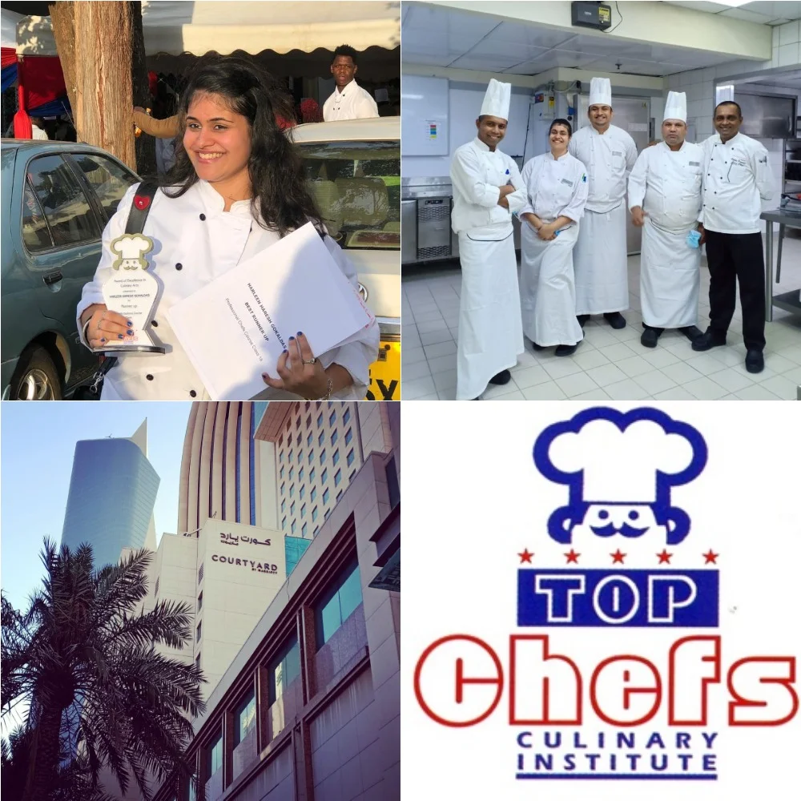
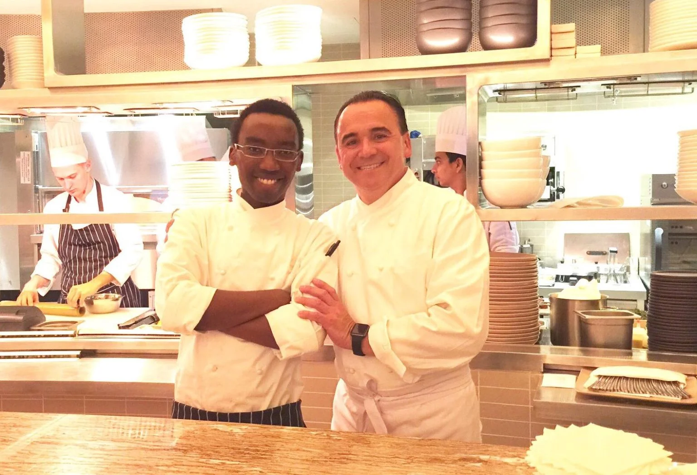
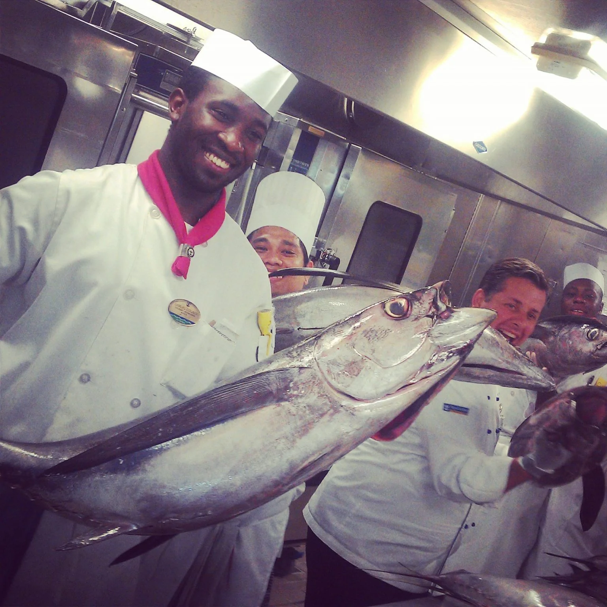

Creating The Next Generation Of Culinary Leaders
For over a decade, TChefs has transformed passionate students into professional chefs, pastry specialists and hospitality leaders working across Kenya and around the world.
For over a decade, TChefs has transformed passionate students into professional chefs, pastry specialists and hospitality leaders working across Kenya and around the world.
We are committed to producing highly skilled culinary professionals equipped with the knowledge, creativity, and leadership needed to succeed in the global hospitality industry.
Our mission is to excel in providing first-class training in Culinary Arts by imparting professional skills, knowledge, creativity, and attitudes of the highest standards.
Through practical training, industry exposure, and modern teaching methods, we prepare students for successful careers in the hospitality and catering industry.
Our vision is not only to produce skilled culinary professionals but also to develop broad-minded, inspired leaders who will meet the future challenges of the catering and hospitality industry.
We aim to be recognized as a leading culinary training institution whose graduates make a positive impact across Kenya and around the world.
Our graduates continue to excel in hotels, restaurants, cruise liners, and hospitality institutions across the globe.

Commis 1 Pastry Chef - Kuwait
“Friday 30th April marked the end of my time at Courtyard by Marriott, Kuwait City as a Commis 1 pastry chef. It has been a wonderful two years, experiencing the styles and lifestyles of a Middle Eastern country, pre- and post- Covid. I have definitely learnt a lot about the preparations that go on at the back of house, handling large numbers with various functions such as weddings and graduation ceremonies.

Head Pastry Chef - Dubai
Michelin starred Chef Jean-Georges Vongerichten with former Top Chef student Jeremiah Gichia. Currently the head Pastry Chef of COYA, located in Dubai.

Executive Sous Chef - Cruise Liner
Former Top Chef graduand Samuel Ogunja now Executive Sous Chef on a Caribbean Cruise liner.